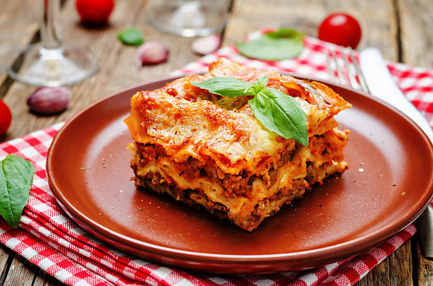

Italian Lasagna Recipe

Description
Italian Lasagna is a traditional Italian dish that combines layers of pasta, meat sauce, and cheese. It's a hearty dish that's perfect for a meal that can be prepared ahead of time and enjoyed at your convenience. The dish is known for its rich flavors, with the layers of meat sauce and cheese providing a satisfying texture and taste.
Here's a step-by-step guide on how to make it:
Ingredients
- Lasagna noodles
- Ground beef
- Tomatoes
- Olive oil
- Garlic
- Parsley
- Salt
- Pepper
- Mozzarella cheese
- Bechamel sauce
- Grated Parmesan cheese
Steps
- Make the Meat Sauce: In a large, heavy pot, heat the olive oil, garlic, and parsley over medium high heat. Add the ground beef and break it up into small pieces. Sprinkle with about 1/2 tsp of salt. When the beef is beginning to dry up, add the tomatoes and stir well. Add more salt, then lower the heat and allow to simmer for about an hour, stirring from time to time. Taste for salt and add pepper. When the sauce is ready, add the torn basil leaves. Remove about a cup (8 oz) of plain sauce (leave the ground beef in the pot and save for the top layer). Refrigerate the meat sauce when cool, or set aside if using right away.
- Make the Bechamel Sauce: While the meat sauce is simmering, melt the butter in a medium pot then add the flour. Keep stirring to cook the flour for at least 5 minutes, but don't let it brown. Pour in a little of the milk, and stir quickly to incorporate. Continue stirring and adding milk a little at a time. Once all the milk is mixed into the flour and butter mixture, add more. Add more milk each time as the composition gets more sauce-like. When all the milk has been added, season with about 1/2 tsp salt, a dash of nutmeg, and about 1/4 tsp white pepper. Taste and adjust as needed. Keep a lid on the sauce if not using right away.
- Cook the Noodles: Boil the noodles in plenty of salted water, making sure to keep moving them so they don’t stick together. Remove the noodles from the heat 5 minutes BEFORE the instructed time on the box. Reserve about 2 cups of the pasta water. Drain most of the water and then fill the pot with cold water just to cover the noodles. This will stop the pasta from cooking further.
- Assemble the Lasagna: Put a thin layer of sauce (no meat) on the very bottom of the pan. Add three pieces of lasagna lengthwise, then top generously with a quarter of the bechamel sauce. Next, dollop on the meat sauce, but don’t add so much that the lasagna will only be sauce at the end. Then top with more lasagna sheets, however, this time, cut them to 9″ strips so that you can place them in the opposite direction. This gives the lasagna structure so that it can hold together when cut. Cut the pieces so that it covers the bottom layer without leaving too much space. Repeat with the bechamel, meat sauce, and mozzarella another three times so that there are 5 layers of pasta and 4 layers of filling. The top of the lasagna will have the strips lengthwise, so pull four (overlap the top layer) of the best looking pieces (which aren’t broken or cut) and save them for the top. Spread some of the tomato sauce without meat pieces for the very top layer. Lastly, sprinkle some grated Parmesan on top of the lasagna before baking.
- Bake the Lasagna: Cover with foil (but make sure the foil doesn’t touch the lasagna as tomatoes will eat through the foil) and put in a preheated 400 F (200 C) degree oven for 20 minutes. Remove the foil and continue to bake for another 10 to 20 minutes, depending on how crispy you want the top. The edges will be bubbly when you remove it from the oven, so be careful. Allow to cool for about 10 minutes before cutting.
Sources